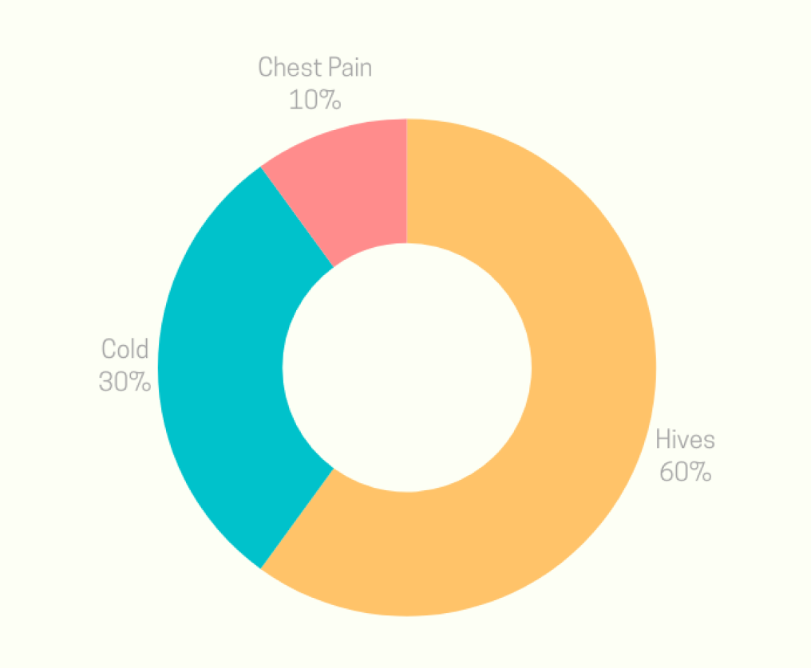

Line Chart
This line chart displays the frequency of symptoms reported each month, which helps in tracking symptom patterns and trends over time.

Pie Chart
The pie chart depicts the proportion of each symptom reported, providing a visual comparison of their relative frequencies.
